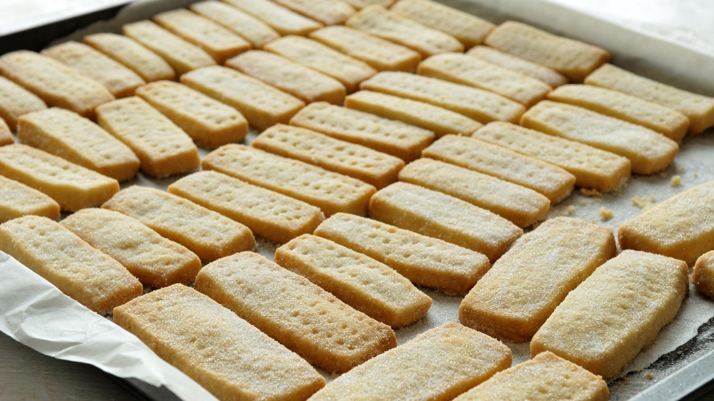

Shortbread Biscuits

Description
Shortbread is buttery biscuit with a crumbly texture. It is a traditional Scottish Biscuit generally shared with loved ones during Christmas and Hogmanay festivities.
This quick recipe will take about 45 minutes in total, with 25 minutes prep time and 15 to 20 minutes to bake.
Ingredients
- 125g/4oz unsalted butter, softened
- 55g/2oz caster sugar, plus extra to finish
- 180g/6oz plain flour
Steps
- Preheat the oven to 190C/170C Fan/Gas 5.
- Beat the butter and the sugar together until smooth.
- Stir in the flour to get a smooth paste. Turn on to a work surface and gently roll out until the paste is 1cm/½in thick.
- Cut into rounds or fingers and place onto a baking tray. Sprinkle with caster sugar and chill in the fridge for 20 minutes.
- Bake in the oven for 15-20 minutes, or until pale golden-brown. Set aside to cool on a wire rack.